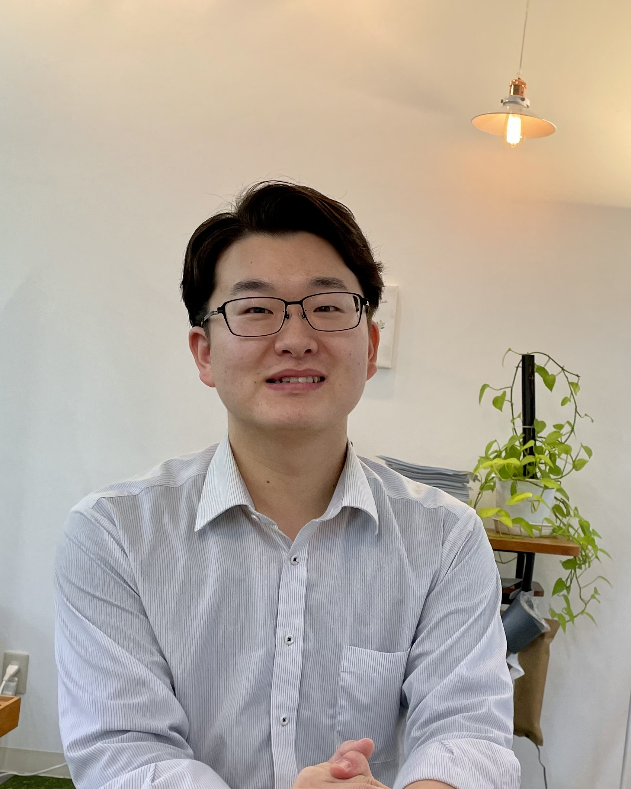

入社直後は、研修テキストによる座学を中心に、お客様とのWebミーティングに参加し、議事録を作成しました。
７月にはプロトタイプ作成を通じて、実践的なプログラミングを行いました。また、システムを導入するお客様向けにリモートで実行環境のセットアップをすることもありました。
１年間で幅広い業務にチャレンジすることが出来たと思います。
小規模プロジェクトの設計から納品までをメインで担当しました。
お客様との設計書レビューを通して、上流工程に携わることが出来ました。
システムの納品後にお客様から直接「めっちゃ早くなりました‼ありがとうございます」と言われたことを、今でも鮮明に覚えています。
お客様とやり取りすることが増え、不具合や仕様の問い合わせ対応を行うことが増えました。また、お客様に対して仕様の確認、提案も行っています。
３年目からは後輩の指導も始まり、これまでなんとなくできていたことも、人に説明するとなると深く理解していない部分が見えてきました。
特に基本的なことや普段無意識に行っている作業の理由を聞かれると、答えに詰まってしまうこともあります。